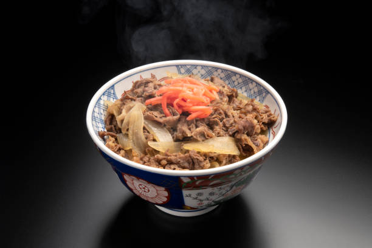

Gyudon

What is Gyudon?
Gyudon, or "beef bowl," is a popular Japanese dish featuring thinly sliced beef and onions simmered in a savory-sweet sauce made with soy sauce, mirin, sake, and dashi, then served over a steaming bowl of rice. It's a quick and comforting meal that combines the umami richness of the broth with the natural sweetness of onions and the tender texture of beef. Often topped with a raw or poached egg and pickled ginger, gyudon is a staple of Japanese home cooking and fast-food chains alike.
Ingredients
- 1/2 pound thinly sliced beef (ribeye or chuck)
- 1 onion, thinly sliced
- 1 cup dashi (or water with dashi powder)
- 3 tablespoons soy sauce
- 2 tablespoons mirin
- 2 tablespoons sake
- 1 tablespoon sugar
- 2 cups cooked Japanese rice
- Pickled ginger (beni shoga) for garnish (optional)
- 1 soft boiled or poached egg (optional)
- Chopped green onions (optional)
Instructions
- In a saucepan, combine dashi, soy sauce, mirin, sake, and sugar. Bring to a gentle boil over medium heat.
- Add sliced onions and simmer until they are soft and translucent, about 5-7 minutes.
- Add the sliced beef and cook until no longer pink, stirring gently to separate the slices.
- Simmer for another 2-3 minutes, allowing the beef to absorb the flavors.
- Serve the beef and onions over bowls of steamed rice.
- Top with a poached or soft-boiled egg, green onions, and pickled ginger if desired.
Back to index